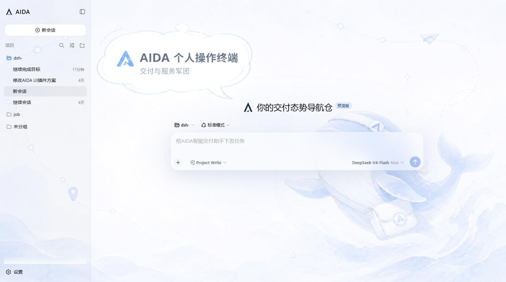
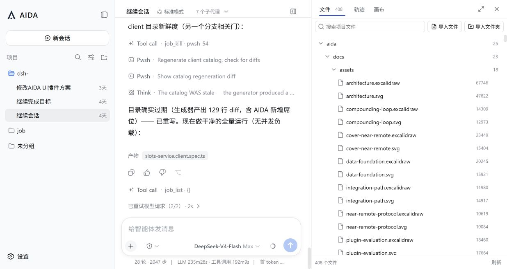
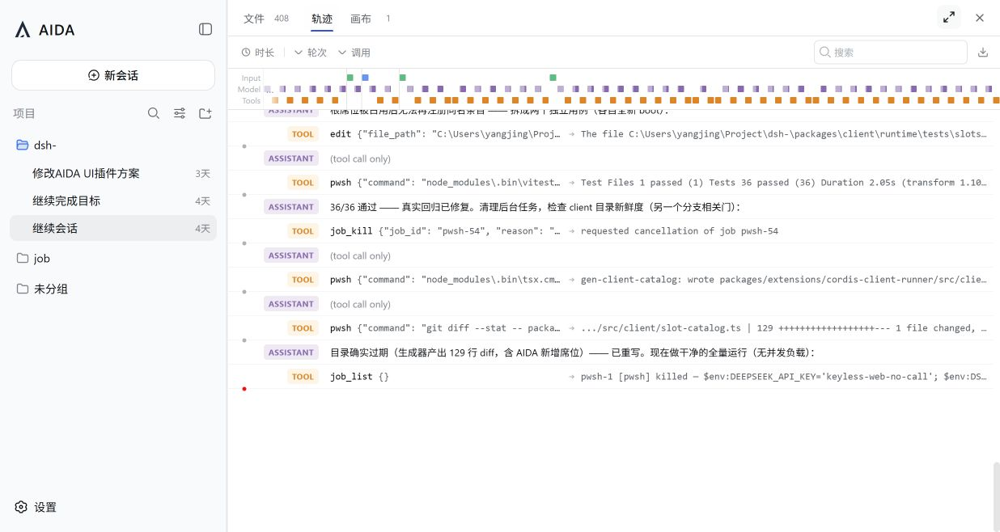
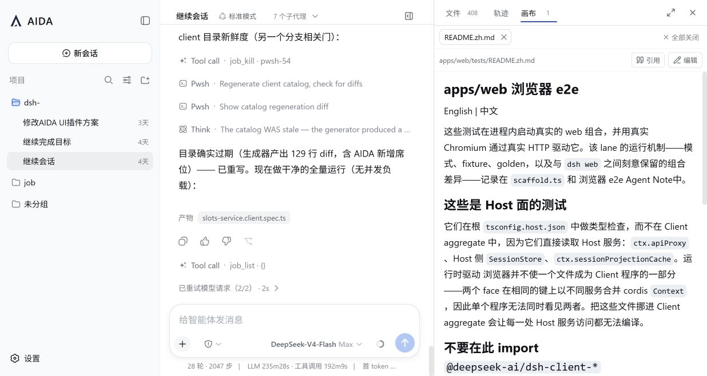

LOCAL CHECKOUT01
开发与集成
在 DSH 仓库中加入本地插件目录，然后启动 Web profile。
pnpm dsh plugin --profile web add \
./packages/client/ui-aida
pnpm exec tsx apps/cli/src/bin.ts \
web --no-open一个可安装到 DSH 的 React UI 插件，让文件、轨迹与产物围绕当前会话工作。
AIDA UI FOR DSH / PRODUCT DECK / PREVIEW
AIDA 不创建第二个工作台。它把项目文件、Agent 轨迹和可编辑产物放进 DSH 的 details 轨道，同时保留原始会话模型。
docs/design-language.md



DSH 原生 primitive 与语义 token 优先。TASTE 负责层级和一致性，Amicro 只负责有意义的状态过渡。
40pxToolbar三页统一高度14pxIcon同一描边与重量12pxLabel紧凑但可读160msFeedback不动画布局几何开发时链接本地目录，交付时安装归档包。两条路径共享同一个 Cordis 插件条目。
在 DSH 仓库中加入本地插件目录，然后启动 Web profile。
pnpm dsh plugin --profile web add \
./packages/client/ui-aida
pnpm exec tsx apps/cli/src/bin.ts \
web --no-open安装构建后的 tarball。移除插件不会删除现有会话与项目数据。
dsh plugin --profile web add \
./deepseek-ai-dsh-client-ui-aida.tgz
dsh plugin --profile web remove \
@aida/aida-ui-dshAIDA UI 把最常用的交付上下文放回 Session，同时保持 DSH 核心可升级、插件可移除。
查看完整插件说明 docs/README.md